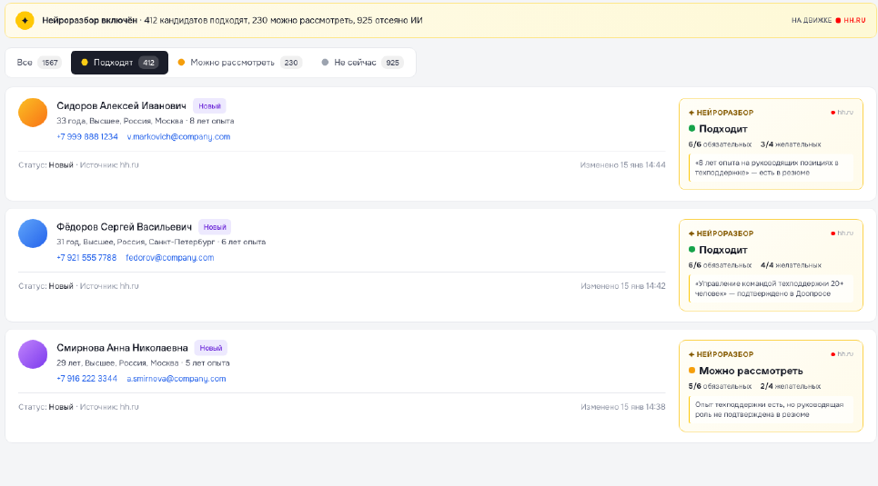
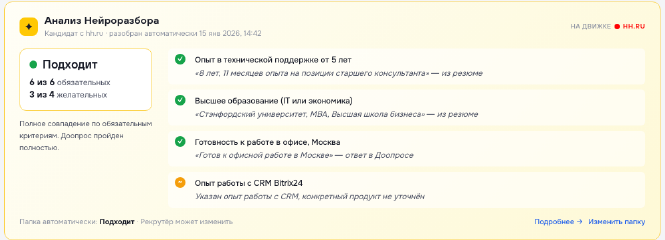

ДАННЫЕ ДЛЯ ИНТЕГРАЦИИ
SKILLAZ ×
HH.RU
01 / 10
ИИ-разбор hh.ru
и данные для Skillaz
и данные для Skillaz
Результаты разбора и ответы кандидатов
в публичной документации API hh.ru
в публичной документации API hh.ru
Нейроразбор + Доопрос
Информация для первичного отбора.
Решение о следующем этапе принимает рекрутёр.
Решение о следующем этапе принимает рекрутёр.
РАБОЧИЙ ПРОЦЕСС
Какие данные описаны
в API hh.ru
в API hh.ru
SKILLAZ ×
HH.RU
02 / 10
РАЗБОР РЕЗЮМЕ
Оценка и основания
Результат оценки
Краткая сводка
Выполнение критериев
Объяснение по каждому критерию
Краткая сводка
Выполнение критериев
Объяснение по каждому критерию
ОТВЕТЫ КАНДИДАТА
Вопросы и ответы
Вопрос работодателя
Цитата ответа кандидата
Статус ответов и вопросы кандидата
Цитата ответа кандидата
Статус ответов и вопросы кандидата
Эти данные приведены в официальных примерах ответа API hh.ru.
РАЗДЕЛЕНИЕ ВОЗМОЖНОСТЕЙ
Результаты ИИ
в документации API hh.ru
в документации API hh.ru
SKILLAZ ×
HH.RU
03 / 10
| Результат работы ИИ | Данные в примере ответа API |
| Итог разбора | Решение ИИ и краткая сводка |
| Проверка требований | Критерии и степень выполнения |
| Основания оценки | Объяснение и источник информации |
| Ответы кандидата | Вопросы и цитаты ответов |
Публичный пример API описывает получение результатов ИИ.
ПРОЦЕСС
Получение результатов ИИ
SKILLAZ ×
HH.RU
04 / 10
01
Настройка в hh.ru
Критерии разбора и вопросы задаются в интерфейсе hh.ru.
02
Разбор и диалог в hh.ru
ИИ сопоставляет резюме с требованиями и уточняет недостающие сведения.
03
Данные в API hh.ru
В примерах ответа на запрос отклика есть оценка и ответы кандидата.
04
Решение рекрутёра
Рекрутёр проверяет информацию и выбирает следующий этап.
НЕЙРОРАЗБОР
Результат разбора и его основания
SKILLAZ ×
HH.RU
05 / 10

Категория
Помогает выбрать
приоритет просмотра
приоритет просмотра
Критерии
Показывают основания
оценки кандидата
оценки кандидата
Иллюстрация из исходной презентации. Решение принимает рекрутёр.
ДООПРОС
Вопросы и ответы
в результатах доопроса
в результатах доопроса
SKILLAZ ×
HH.RU
06 / 10
ВОПРОС В ЧАТЕ HH.RU
«Готовы работать
по графику 2/2?»
по графику 2/2?»
ОТВЕТ КАНДИДАТА
«Да, такой график
мне подходит»
мне подходит»
ДАННЫЕ В API HH.RU
Вопрос
и цитата ответа
и цитата ответа
Иллюстративный пример
В примере API ответ сохраняется вместе с вопросом работодателя.
ОСНОВАНИЯ ОЦЕНКИ
Что объясняет оценку кандидата
SKILLAZ ×
HH.RU
07 / 10

Проверка оснований
Иллюстрация из исходной презентации.
Рекрутёр проверяет выводы ИИ.
Рекрутёр проверяет выводы ИИ.
ДАННЫЕ ПО КРИТЕРИЮ
01
Выполнение требования
02
Объяснение оценки
03
Источник информации
ОЦЕНКА ПОЛЬЗЫ
Как измерить пользу интеграции
SKILLAZ ×
HH.RU
08 / 10
План замеров для пилота интеграции со Skillaz
| Показатель | До интеграции | С интеграцией |
| Ручное время на отклик | Замер | Замер |
| Перенос данных между системами | Замер | Замер |
| Полнота карточки кандидата | Замер | Замер |
| Время до следующего этапа | Замер | Замер |
| Доля ручных корректировок | Замер | Замер |
Отклики × сэкономленные минуты ÷ 60 = высвобождённые часы
ПОДГОТОВКА К ПОДКЛЮЧЕНИЮ
Что оценить перед подключением
SKILLAZ ×
HH.RU
09 / 10
Процесс
Ручные действия.
Переключения систем.
Время на один отклик.
Переключения систем.
Время на один отклик.
Данные
Какие результаты ИИ
нужны рекрутёру
для следующего шага.
нужны рекрутёру
для следующего шага.
Экономика
Ожидаемая экономия
времени и полная
стоимость подключения.
времени и полная
стоимость подключения.
Основа решения — результаты пилота и согласованное предложение.
ПИЛОТ
SKILLAZ ×
HH.RU
10 / 10
Пилот интеграции со Skillaz
01
Выбор процесса
Команда, вакансии и объём откликов
02
Подготовка
Тестовый отклик и проверка получения данных
03
Пилот
Исходные показатели и изменения в работе
04
Оценка
Высвобождённое время и стоимость использования
Следующий шаг: рабочая встреча по сценарию и условиям пилота